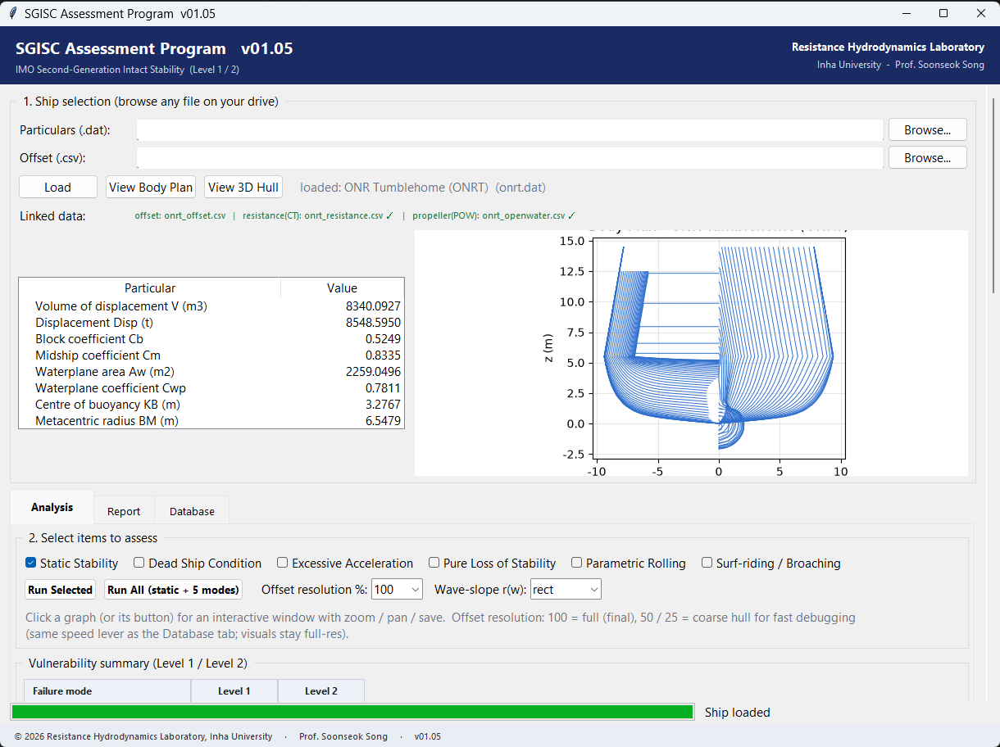
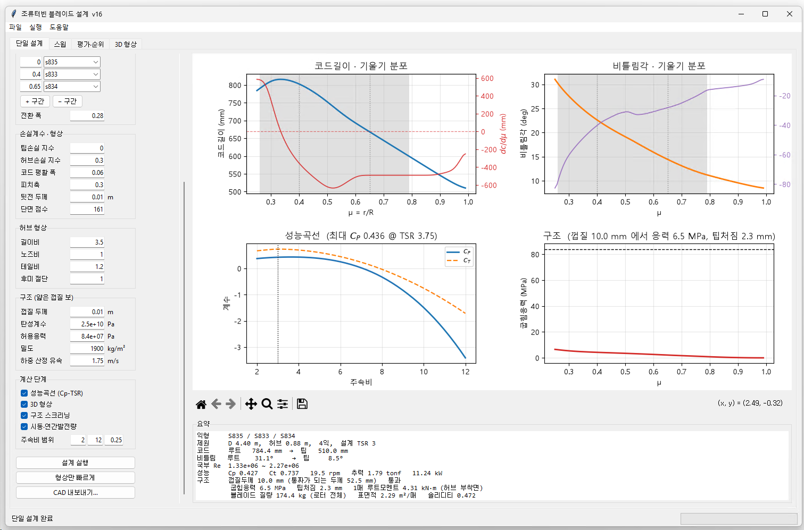
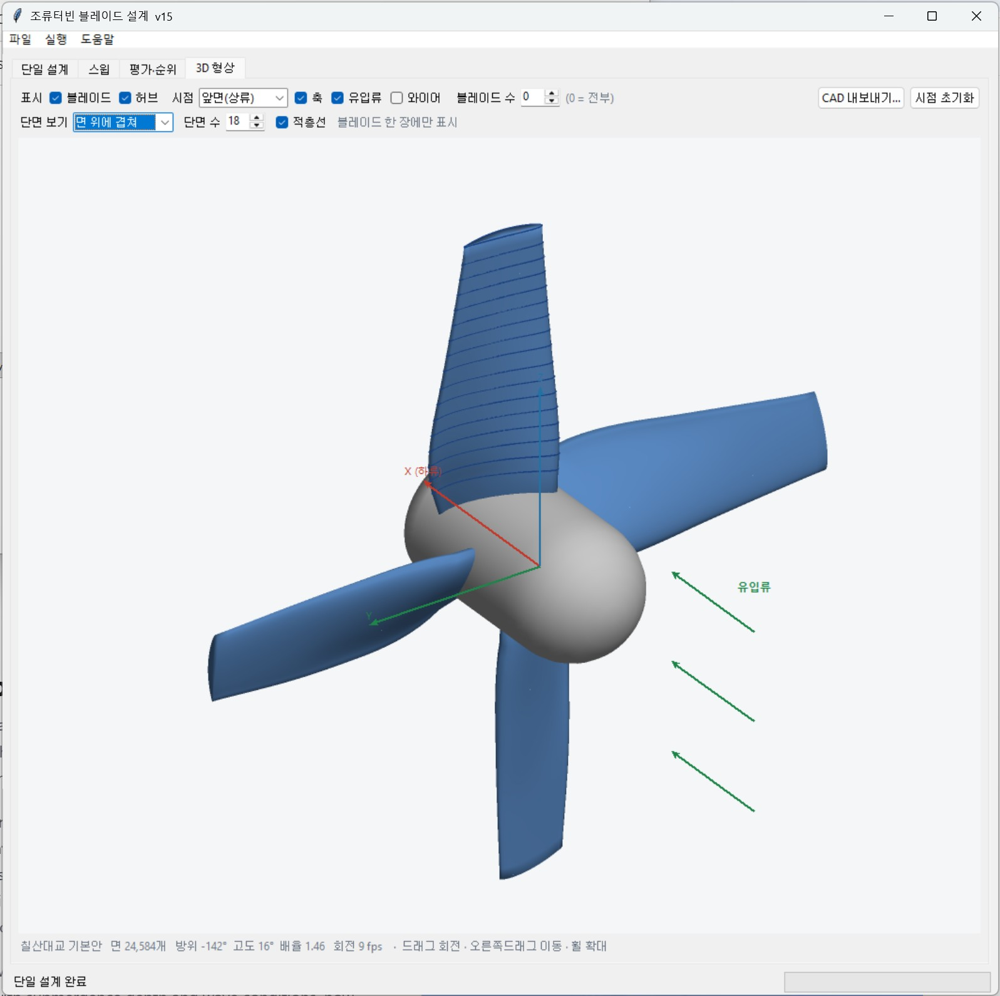
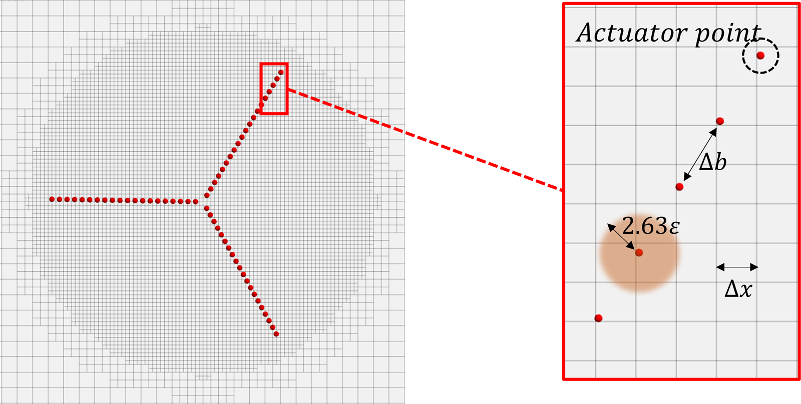
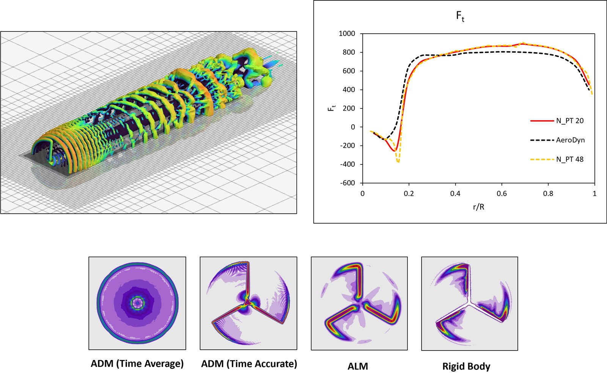

Research codes developed in the laboratory. Most couple to STAR-CCM+ — the commercial solver resolves the flow, and our code supplies the physics it does not have.
Scour morphodynamics, coupled to CFD
Currents erode the seabed around piers and foundations, and the hole they dig changes the flow that digs it. RHL-Scour closes that loop: STAR-CCM+ resolves the flow field, and our morphodynamics module updates the bed — bedload transport, suspended-sediment exchange carried as a passive scalar with a conservative settling model, the sediment mass balance on the bed, and a sand-slide correction where the slope exceeds the angle of repose. The updated bed becomes new geometry, the domain is remeshed, and the cycle repeats until the scour hole reaches equilibrium.
The method is validated against laboratory pier-scour experiments. The solver core is complete and drives the animation shown here; a user interface is in preparation.
Ship–ice interaction by multi-body dynamics, with CFD in the background
Our ship-ice work began with coupled CFD–DEM, which resolves every floe in the flow but at a heavy computational price. RHL-IceMBD is the fast counterpart: a multi-body dynamics solver handles ice–ice and ice–ship contact and the resulting ice loads, while STAR-CCM+ runs in the background as a flow module the program drives directly.
Contact forces follow from mass and momentum exchange, governed by just two coefficients — friction and restitution, where restitution shapes the instantaneous impact but leaves the mean resistance unchanged. Buoyancy is computed by cutting each floe at the free surface and integrating the submerged volume about its centre, with the motion damped through a damping ratio. Fluid forces on the floes are built from drag and friction coefficients that can be customised to floe shape and attitude.

IMO second-generation intact stability assessment
The IMO second-generation intact stability criteria judge a ship not by a single righting-arm curve but by five dynamic failure modes — dead ship condition, excessive acceleration, pure loss of stability, parametric rolling, and surf-riding/broaching. RHL-SGISC runs the complete Level 1 and Level 2 vulnerability assessment for all five from a ship's basic data: it reads the particulars and hull offsets, computes the hydrostatics, and returns a mode-by-mode verdict with a generated report.
A ship database keeps assessed designs side by side. The program anchors our work on the operational safety of autonomous ships, where the second-generation criteria become constraints on routing and heading decisions in heavy weather.


Tidal turbine blade design suite
A complete design environment for horizontal-axis tidal turbine blades, built on blade element momentum theory. The designer chooses hydrofoil sections along the span and the program returns the chord and twist distributions, the power and thrust curves across tip-speed ratios with tip and hub loss corrections, and a structural screening of the blade as a thin-shell beam — bending stress and tip deflection against allowables.
Beyond a single design, the suite sweeps design parameters and ranks the candidates, estimates cut-in behaviour and annual energy production for a given current profile, and exports the finished three-dimensional blade directly to CAD for model production or CFD analysis.


Actuator line module for STAR-CCM+
Resolving every blade of a turbine in CFD is expensive; for wake studies it is also unnecessary. RHL-ALM represents each blade as a line of actuator points. At every time step the module computes the sectional thrust and torque at each point from blade element momentum theory, then projects those forces onto the CFD grid as a momentum source through a Gaussian smearing kernel, with tip-loss corrections applied along the span.
The rotor costs almost nothing, so the mesh budget goes to the wake — the helical tip vortices a rotor sheds, their breakdown, and what they mean for turbines operating downstream. We use it for wind and tidal rotors alike, including the rotor of a floating offshore wind turbine in motion.
Dissolved-oxygen transport inside STAR-CCM+
An internal tool that turns STAR-CCM+ into a dissolved-oxygen solver for aquaculture. Oxygen is carried as a passive scalar; transfer from injected air into seawater follows a two-film mass-transfer model, with the saturation concentration computed in real time from local temperature and salinity. The result is the oxygen field around sea cages — where the plume from an aeration system actually goes, and which cages it reaches.
Also in the toolbox
Alongside the named programs, a set of smaller in-house modules supports the lab's daily work: